Moth
Name: Moth
Bio: Moth is a current Talon combat medic leader. Taking over his fathers position he now leads his fathers old division into battle. He see's no issue with the work Talon does, and always vows to complete the tasks that are handed to him. However, he does have some morality as he makes sure no innocent civillians are killed. He only considers this a job and that killing should only be done if its abolutley necessary. Despite this, if anyone gets in the way of the mission he won't stop to kill them.

| > |
Biotic Palm |
Primary: Depending on which filter is on Moth shoots a beam of healing or damage. Healing heals teammates and damages damages enemies. Both beams can go through barriers and enemies/teammates |
| > |
Filter |
Secondary: Moth can switch filters between healing or damage. There is only a single ammunation slot |
| > | Biotic Bomb |
E: Moth throws a biotic bomb that when landed creates a gas; he can choose between a healing or damage gas |
| > | Moth Boost |
L-Shift: With his wings, Moth boosts up in the air and is able to glide. Moth also leaves behind a healing gas that regenerated a players health |
| > | Biotic Humidifier |
Ultimate: Moth deploys a device that constantly releases healing and toxic gases. It can be destroyed. |